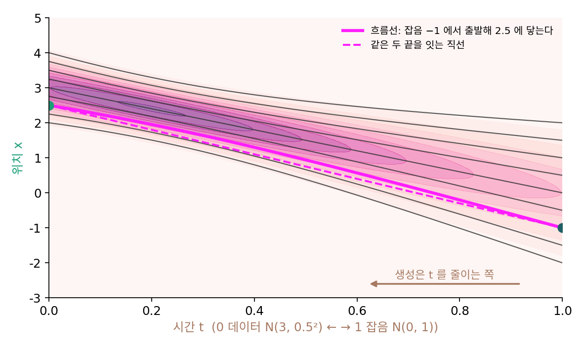

플로우 매칭: 길을 통째로 배우기
이 장의 물음
그림 생성 앱의 설정 칸에는 대개 「걸음 수」가 있다. 걸음 수를 줄이면 그림이 빨리 나오지만, 너무 줄이면 그림이 뭉개지거나 흐릿해진다. 2020년에 나온 DDPM은 그림 한 장에 1000걸음을 걸었다. 걸음마다 신경망을 한 번씩 부르니, 걸음 수가 곧 그림 한 장을 만드는 데 드는 시간이다.
지금까지 배운 길은 이렇게 걷는다. 걸음마다 신경망에게 레이더 바늘, 곧 스코어를 묻고, 잡음 일정이 정한 규칙으로 그 바늘을 한 걸음의 움직임으로 바꾼다. 바람을 맞으며 걷는 길이든 바람 없이 매끄럽게 흐르는 길이든 그 규칙은 바늘 바깥에 따로 있다. 게다가 그 길은 휘어 있어서, 잡음이 짙은 곳에서 본 방향으로 멀리 뛰면 봉우리 사이의 빈 땅에 떨어진다. 이 장은 다음 물음에 차례로 답한다.
- 바늘과 걷는 규칙을 따로 두지 않고, 자리와 시간마다 「어느 쪽으로 얼마나 빨리」를 통째로 배울 수는 없을까?
- 그 빠르기의 정답은 아무도 모르는데, 그림만 가지고 어떻게 배울까?
- 그렇게 배운 것과 스코어는 서로 다른 정보일까?
- 길이 곧으면 한 걸음에도 닿을 수 있을까? 휜 길을 곧게 펼 수는 있을까?
- 매 순간의 빠르기 대신 「여기서 저기까지」 통째로 얼마나 가는지를 배우면 어떻게 될까?
속도장: 길을 통째로 익힌 참가자
스코어로 거꾸로 걷는 길을 다시 보자. 잡음 분산이 2Dt로 쌓이는 일정에서는 한 걸음이 x + D·s·Δt였다. 레이더 바늘 s는 방향만 알려 주고, 그 방향으로 얼마나 갈지는 퍼지는 빠르기 D와 걷는 규칙(바람을 맞으며 걷는 역방향 SDE인지, 바람 없이 흐르는 확률 흐름 ODE인지)이 정했다. 일정이 바뀌면 바늘을 걸음으로 바꾸는 식도 바뀐다. 이 바꾸기까지 처음부터 신경망에게 맡길 수는 없을까?
두 참가자
드래곤볼 찾기 대회에 참가자 둘이 나섰다. 첫째는 레이더를 손에 들고 매 순간 바늘을 본다. 바늘이 가리키는 쪽으로 얼마만큼 걸을지는 주최 측이 나눠 준 규칙표를 보고 정한다. 「안개가 이만큼 걷히는 동안에는 바늘 길이의 몇 배만큼 걸어라.」 둘째는 지난 대회의 기록을 모두 익혀 작은 수첩 하나에 적어 두었다. 수첩에는 「이 시각에 이 자리에 있으면, 이쪽으로 이만한 빠르기로 가라」가 자리와 시각마다 적혀 있다. 둘째 참가자에게는 규칙표가 필요 없다. 수첩이 곧 규칙이다.
이 장은 둘째 참가자의 수첩을 신경망으로 만든다. 먼저 그런 수첩을 손으로 다 적을 수 있는 가장 단순한 경우, 데이터가 가우시안 하나인 경우로 수첩이 어떻게 생겼는지 보자. 가우시안은 퍼질 때 모양을 그대로 둔 채 옮겨 가고 부풀기만 하므로, 모든 점이 「평균에서 표준편차 몇 개만큼 떨어져 있나」를 지키며 움직인다. 그 덕에 길을 식 하나로 적을 수 있다.
가우시안 구름을 실어 나르는 수첩
데이터가 N(3, 0.5²)이고, 잡음 섞기는 직선 일정 xt = (1 − t)x₀ + tε라 하자. 시간은 이 책의 관례대로 t = 0이 데이터, t = 1이 순수한 잡음 N(0, 1)이다. 그림과 잡음이 서로 상관없으니 분산이 더해져, 시간 t의 분포는 평균 3(1 − t), 분산 0.25(1 − t)² + t²인 가우시안이다. 표준 점수를 지키는 점의 자리와, 그 자리를 시간으로 미분한 빠르기는 다음과 같다.
잡음 쪽 끝에서 x = −1에 있던 점(t = 1에서 표준 점수가 −1)을 따라가 보면 이렇다.
| t | 1 | 0.75 | 0.5 | 0.25 | 0 |
|---|---|---|---|---|---|
| 자리 x | −1.000 | −0.010 | 0.941 | 1.799 | 2.500 |
| 빠르기 v | −4.000 | −3.904 | −3.671 | −3.139 | −2.500 |
빠르기가 모두 음수인 데 주의하자. v는 시간이 0에서 1로, 곧 데이터에서 잡음 쪽으로 흐를 때의 빠르기다. 그림을 만들 때는 시간을 1에서 0으로 줄여 가므로, 점은 v의 반대쪽, 곧 −v 쪽으로 움직인다. 이 표의 점은 −1에서 출발해 오른쪽으로 걸어 2.5, 데이터 분포에서 표준 점수 −1인 자리에 닿는다. 이 수첩을 4000걸음으로 잘게 나눠 따라가도 도착점은 2.5002다.
이렇게 자리와 시간을 넣으면 그 자리의 점이 움직이는 빠르기와 방향이 나오는 함수 v(x, t)를 속도장 (자리마다 정해진 흐름의 빠르기와 방향 / velocity field)이라 한다. 둘째 참가자의 수첩이 속도장이다. 점 하나는 속도장을 따라 dx/dt = v로 움직이고, 점들의 분포는 그 흐름에 실려 옮겨 간다. 확률이 어디서 생기거나 사라지지 않고 옆으로 흘러갈 뿐이라는 연속 방정식 ∂pt/∂t = −∇·(ptv)가 그 옮김을 적는다. 열 방정식을 흐름으로 읽을 때 본 속도 −Ds도 속도장이었다. 다만 그때는 스코어에서 계산해 낸 속도장이었고, 이제는 속도장 자체를 배우려 한다.

| 배우는 것 | 걷는 규칙 | |
|---|---|---|
| 레이더를 보는 참가자 | 자리와 잡음 수준마다의 스코어 s: 「어느 쪽이 볼 쪽인가」 | 따로 필요하다(잡음 일정, 바람을 넣을지) |
| 수첩을 든 참가자 | 자리와 시간마다의 속도 v: 「어디로 얼마나 빨리 흐르는가」 | 속도장이 곧 규칙이다 |
시간이 수첩의 입력이라는 점은 같다. 스코어가 잡음 수준마다 달랐듯 속도장도 시간마다 다르다.
짝 하나의 길
그런 수첩을 데이터 분포를 모르고 어떻게 적을까? 손에 있는 것은 그림들과, 얼마든지 뽑을 수 있는 잡음이다. 그림 하나 x₀와 잡음 하나 ε를 짝지으면, 직선 일정의 식 xt = (1 − t)x₀ + tε는 그 짝을 잇는 선분 위를 일정한 빠르기로 가는 길이다. 그 빠르기는 시간으로 미분하면 바로 나온다.
이 식은 그림 하나와 잡음 하나, 곧 표본 둘을 섞는다. 두 분포를 섞는 것과는 다르다. 분포를 반반 섞으면 「반은 데이터에서, 반은 잡음에서 뽑는다」가 되어 봉우리가 둘 남지만, 표본을 반반 섞은 x0.5는 두 표본의 한가운데에 놓인 점 하나다. 데이터 N(3, 0.5²)이면 x0.5들의 분포는 1.5에 봉우리 하나뿐이다.
짝 하나의 길은 곧다. 그런데 위 그림의 흐름선은 곧지 않았다. 잡음 −1에서 출발한 점이 실제로 닿는 곳은 2.5인데, −1과 2.5를 잇는 직선은 t = 0.5에서 0.75를 지나고 흐름선은 0.941을 지난다. 짝마다의 직선과 실제 흐름은 어떤 관계일까? 다음 절의 물음이다.
ML에서: 신경망이 속도를 내놓는 모델
요즘 그림 생성 모델 가운데 여럿은 신경망이 스코어나 잡음 대신 속도를 내놓는다. Stable Diffusion 3을 소개한 에서(Patrick Esser)와 동료들의 2024년 논문 제목은 「고해상도 그림 생성을 위한 정류 흐름 트랜스포머 키우기(Scaling Rectified Flow Transformers for High-Resolution Image Synthesis)」이고, Black Forest Labs는 FLUX.1 [dev]를 「매개변수 120억 개의 정류 흐름 트랜스포머(rectified flow transformer)」라고 소개한다. 「정류 흐름」은 이 장 뒤에서 이름의 뜻을 본다. 두 모델 모두 신경망 vθ(xt, t)가 수첩 노릇을 한다.
문제 1. 흐름선은 짝의 직선인가
데이터 N(3, 0.5²)과 잡음 N(0, 1) 사이의 흐름에서, 잡음 쪽 끝(t = 1)의 자리 1.2에서 출발한 점을 따라간다. 흐름선은 x(t) = 3(1 − t) + √(0.25(1 − t)² + t²)·z이다. (가) 이 점은 t = 0에 어디에 닿는가? (나) t = 0.5의 자리를, 출발점과 도착점을 잇는 직선의 한가운데와 견주어라. (다) 흐름선이 직선이 되려면 무엇이 시간에 대해 직선이어야 하는가?

출발점의 표준 점수가 1.2니까 도착점은 3 + 0.5 × 1.2 = 3.6이에요. 출발이 1.2, 도착이 3.6이면 한가운데는 2.4고요. 흐름선이 한 점을 다른 점으로 옮기는 길이니 (나)도 2.4 아닐까요?

식에 t = 0.5를 넣어 봐요.

3 × 0.5 = 1.5에 √(0.0625 + 0.25) × 1.2 = 0.559 × 1.2를 더하면… 2.171이에요. 2.4보다 0.23쯤 아래네요.

평균 3(1 − t)는 t에 대해 직선인데, 표준편차 √(0.25(1 − t)² + t²)가 직선이 아니야. 양 끝이 0.5와 1이니 직선이면 한가운데가 0.75여야 하는데 0.559로 오목하게 꺼져. 분산이 더해지는 거라 표준편차는 제곱합의 제곱근이 되니까.

그럼 (다)는요?

평균과 표준편차가 둘 다 t의 직선이면 돼요. 표준편차가 0.5(1 − t) + t로 곧게 변하면 흐름선도 곧아요. 그런데 그럼 그 시간의 분포가 우리가 섞은 분포와 달라지는데요. 그림과 잡음을 서로 상관없이 섞으면 분산이 더해지니까 표준편차가 곧게 변할 수가 없어요.
그래요. 「서로 상관없이 섞는다」를 바꾸면 길이 달라져요. 그건 짝을 어떻게 짓느냐의 이야기라 뒤로 미뤄 둬요.
피타고라스 정리를 다시 만났네요. 직각인 두 변이 곧게 줄고 늘어도 빗변은 곧게 변하지 않아요.
문제 2. 짝 하나를 따라 한 걸음
픽셀 값 하나로 줄인 장난감에서, 그림 x₀ = 0.8과 잡음 ε = −1.3을 짝지었다. (가) 이 짝의 속도와 t = 0.4의 자리는? (나) t = 0.4의 자리에서 그 속도로 생성 쪽으로 Δt = 0.1만큼 한 걸음 가면 어디에 닿는가? t = 0.3의 참 자리와 견주어라. (다) 신경망이 이 자리와 시간 (x, t) = (−0.04, 0.4)에서 늘 이 속도를 내놓도록 배울 수 있을까?
속도는 −1.3 − 0.8 = −2.1, 자리는 0.6 × 0.8 + 0.4 × (−1.3) = −0.04예요. 한 걸음은 −0.04 + 0.1 × (−2.1) = −0.25고요.
t = 0.3의 참 자리는 어디예요?

0.7 × 0.8 + 0.3 × (−1.3) = 0.17이요. −0.25가 아니네요. 생성 쪽은 t가 줄어드니까 시간 간격이 −0.1이에요. 속도에 −0.1을 곱해야, 곧 −v 쪽으로 가야 해요. −0.04 + 0.21 = 0.17, 참 자리와 딱 맞아요.
짝 하나의 길은 곧으니까 한 걸음이든 열 걸음이든 오차가 없지. 곧은 길이면 걸음을 크게 잡아도 빗나갈 게 없어.
(다)는 어때요? 이 자리를 지나는 짝이 이것 하나뿐일까요?

아니요. t = 0.4에 −0.04를 지나는 짝은 그림이 무엇이든 잡음을 맞춰 고르면 얼마든지 있어요. 그림이 −1이면 잡음은 (−0.04 + 0.6)/0.4 = 1.4라 속도가 2.4예요. 같은 자리에 속도가 −2.1인 짝도 2.4인 짝도 지나가요.

신경망은 자리와 시간만 보니까 둘 중 하나를 골라 말할 수가 없겠네요. 조교님이 같은 학번 두 사람 답안을 하나로 채점해야 하는 거랑 같아요. 이름 칸이 없으면 누구 것인지 몰라요.